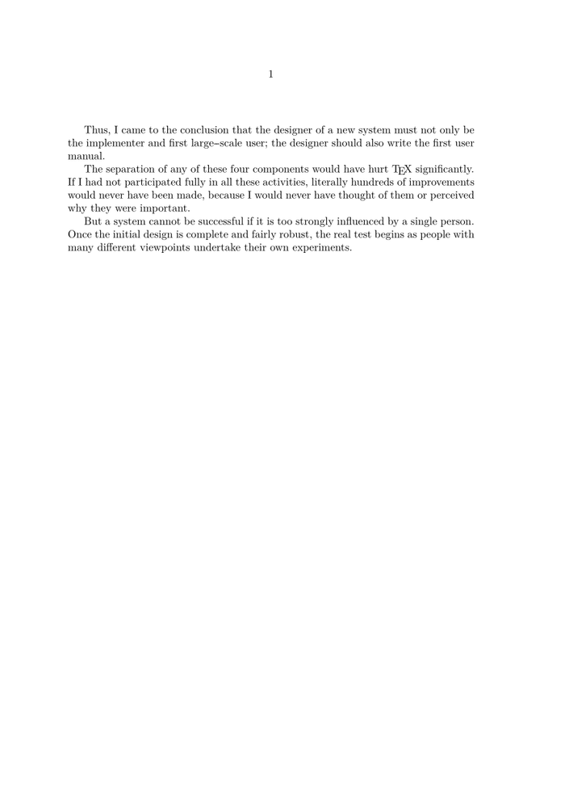
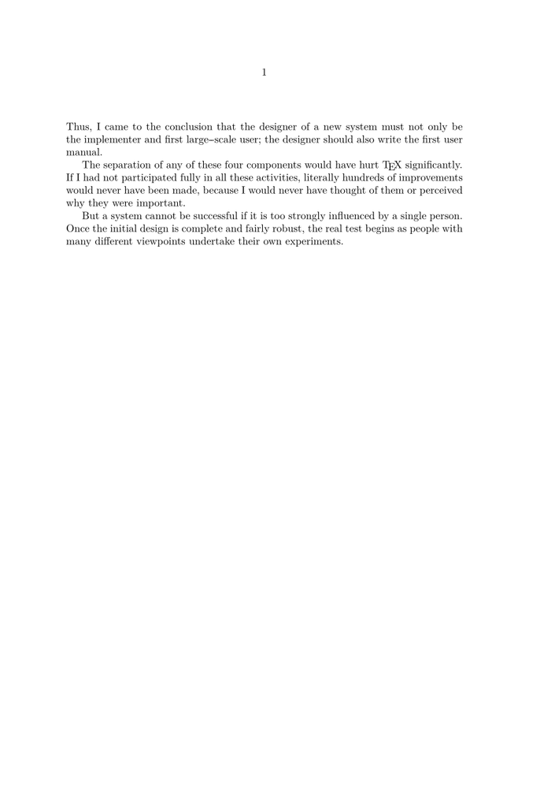
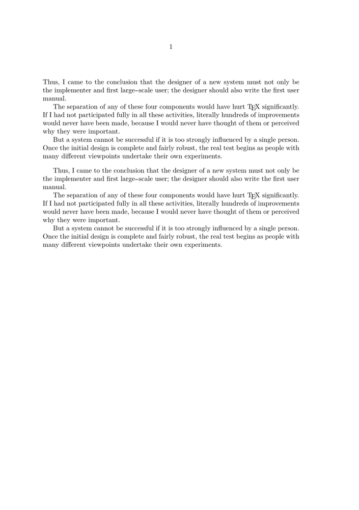

On this page I will put some info about using indent.
Standard no indentation is used:
-
\starttext \input knuth \stoptext
When you want indentation you use:
-
\setupindenting[yes,medium] \starttext \input knuth \stoptext
- 
When you do not want indentation on the first paragraph you use:
-
\setupindenting[yes,medium,next] \starttext \input knuth \stoptext
- 
The only problem is that when using context instead of texexec the paragraph after a blank is not seen as a first paragraph:
\setupindenting[yes,medium,next] \starttext \input knuth \blank \input knuth \stoptext
- 
This can be solved in the following way:
\setupindenting[yes,medium,next] \usemodule[fancybreak] \definefancybreak[myblank][indentnext=no] \starttext \input knuth \myblank \input knuth \stoptext

We have the same problem with a flowchart:
-
\runMPgraphicsfalse \usemodule[chart] \setupindenting[yes,medium,next] \startFLOWchart[test] \startFLOWcell \location {1,1} \name {start} \shape {loop} \text {Start} \stopFLOWcell \stopFLOWchart \starttext \input knuth \FLOWchart[test] \input knuth \stoptext
-

This can be solved in the following way:
-
\runMPgraphicsfalse \usemodule[chart] \setupindenting[yes,medium,next] \definefloat[flowchart][default=force,indentnext=no] \setupcaption[flowchart][number=none] \startFLOWchart[test] \startFLOWcell \location {1,1} \name {start} \shape {loop} \text {Start} \stopFLOWcell \stopFLOWchart \starttext \input knuth \placeflowchart{}{\FLOWchart[test]} \input knuth \stoptext
-